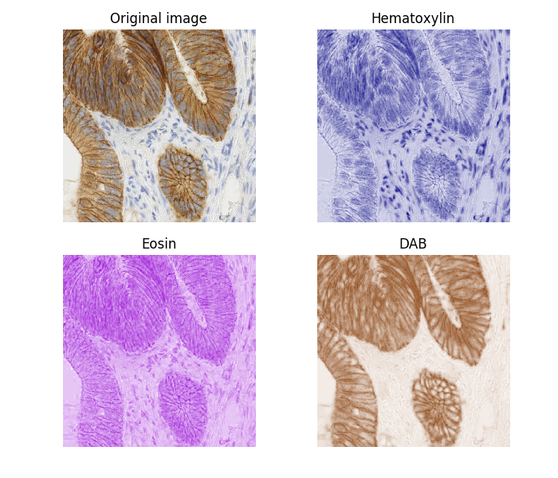
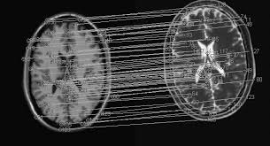
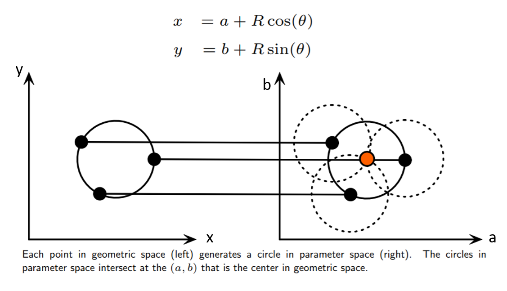
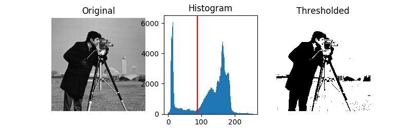
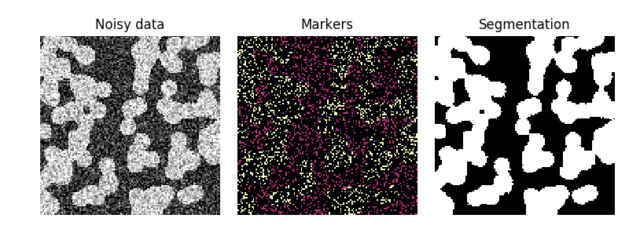
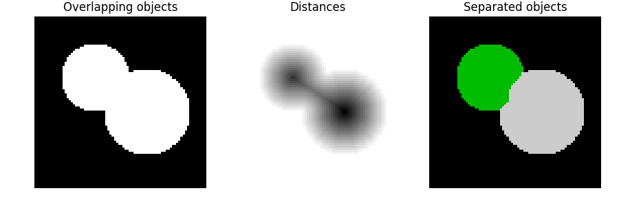
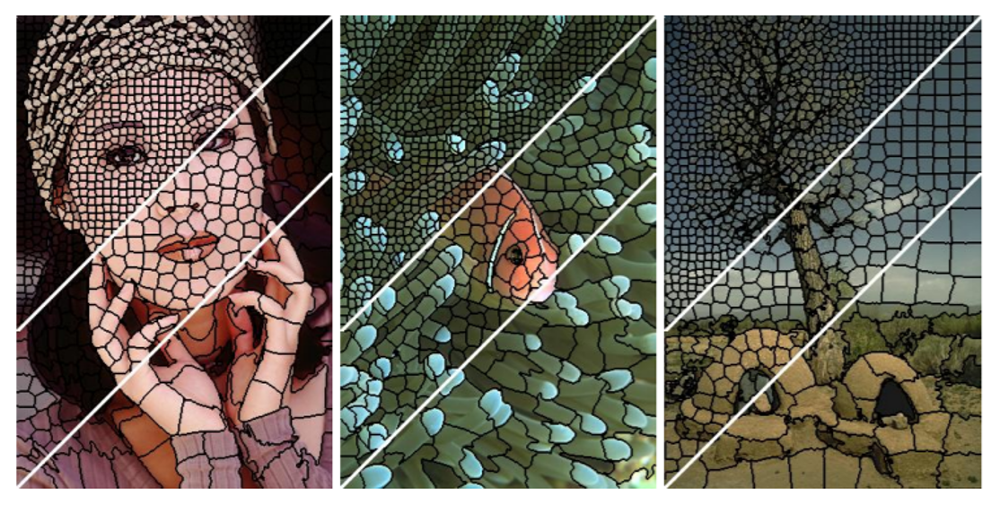

Image processing and computer vision
with scikit-image
Neurohackademy 2018
Michael Beyeler / @mbeyelerCH
Postdoctoral Fellow
eScience Institute
Institute for Neuroengineering (UWIN)
Today's Agenda
1 |
Introduction |
2 |
The scikit-image toolkit How are images represented in scientific computing? |
3 |
Feature detection How can we detect useful features from an image? |
4 |
Image segmentation How can we segment an MRI image into different sections? |
What is computer vision?
An interdisciplinary field that deals with gaining high-level understanding from digital images or videos.
Computer vision tasks include methods for acquiring, processing, and analyzing digital images.
Image processing vs Computer vision

- Image processing:
- [IMG IN] ⇒ [IMG OUT]
- filtering, denoising, etc.
- Computer vision:
- [IMG IN] ⇒ [DESC OUT]
- feature extraction, segmentation, recognition, etc.
What is image data?
For our purposes: multi-dimensional homogeneous data in which spatial relationships matter
- spatial contiguity is meaningful
- usually 3D images or 2D projections
Image processing in medical image analysis
Color deconvolution for immunohistochemical staining
Image registration
Find the coordinate transform between two independent images
3D reconstruction
Reconstruct 3D white matter tracts from diffusion tensor imaging (DTI)

Intraretinal fluid segmenter
Deep learning based segmentation of edema for optical coherence tomography (OCT) images of the retina
 github.com/uw-biomedical-ml/irf-segmenter
github.com/uw-biomedical-ml/irf-segmenter
scikit-image is a collection of Python algorithms for image processing, developed by the SciPy community.
Installation via conda:
$ conda install scikit-imageMore info at http://scikit-image.org.

API reference
The main package of skimage only provides some utility functions - everything else is in submodules:
| Submodule | Description |
|---|---|
data |
test images and example data |
io |
reading, saving, displaying images and videos |
color |
color space conversion |
filters |
sharpening, edge finding, rank filters, thresholding |
API reference
| Submodule | Description |
|---|---|
measure |
measuring image properties (e.g., similarity, contours) |
feature |
feature detection and extraction |
restoration |
restoration algorithms (e.g., deconvolution denoising) |
segmentation |
partitioning an image into multiple regions |
Images are NumPy arrays

Pixels are array elements:
import numpy as np
image = np.ones((5, 5))
image[0, 0] = 0
image[2, :] = 0
uint8) Values 0.0 - 1.0: 0.0 is black, 1.0 is white (
float64)
Image I/O
from skimage import io
img_rgb = io.imread(path_to_rgb_file)
img_gray = io.imread(path_to_rgb_file, as_grey=True)
img = np.random.rand((500, 500))
io.imsave("noise.jpg", img)
Drawing
It's easy to draw on images, too.
skimage.draw.line |
Generate line pixel coordinates |
skimage.draw.circle |
Generate coordinates of pixels within a circle |
skimage.draw.polygon |
Generate coordinates of pixels within a polygon |
skimage.draw.random_shapes |
Generate an image with random shapes, labeled with bounding boxes |
Tutorial 1: Image manipulation
/tutorials/1-skimage_intro.ipynb
$ git clone https://github.com/mbeyeler/2018-neurohack-skimage.gitImage filters
One of the most basic and common image operations - used to remove noise or enhance features.
skimage.filters.gaussian |
Multi-dimensional Gaussian filter |
skimage.filters.sobel |
Find the edge magnitude using the Sobel transform |
skimage.filters.median |
Return local median of an image |
skimage.filters.gabor |
Returns real and imaginary responses to Gabor filter |
Gaussian filter

from skimage import data, filters
img = data.camera()
img_blurred = filters.gaussian_filter(img, sigma=5)
Sobel filter
from skimage import data, filters
img = data.camera()
img_edges = filters.sobel(img)
Median filter
from skimage import io, filters, morphology
img = io.imread("teddy.jpg")
img_blurred = filters.median_filter(img
selem=morphology.disk(3)
)
Feature detection
Methods for computing abstractions of image information
| Edges | points where there is a boundary between two image regions |
| Corners | point-like features with 2D structure |
| Blobs | regions of interest |
Canny edge detection
- Apply a Gaussian filter to smooth the image and remove noise
- Find the intensity gradients
- Apply nonmaximum suppression to get rid of spurious responses to edge detection
- Apply double threshold do termine potential edges
- Track edge by hysteresis: finalize edge detection by suppressing weak edges
Hough transform
used to detect lines, circles or other parametric curves
The locus of (a, b) points in parameter space fall on a circle with radius R centered at (x, y). The true center point will be common to all parameter circles, and can be found with a Hough accumulation array. Haar wavelets
sum up intensities in small rectangles, calculate the difference between the sums

Many more algorithms...
skimage.feature.corner_harris |
Harris corner measure |
skimage.feature.hog |
Histogram of oriented gradients (HOG) |
skimage.feature.ORB |
Oriented FAST and rotated BRIEF feature detector |
Tutorial 2: Feature detection
/tutorials/2-skimage_feature_detection.ipynb
(adapted from skimage-tutorials/lectures/2_feature_detection.ipynb)Image segmentation

Supervised: some prior knowledge is used to guide the algorithm.
Unsupervised: no prior knowledge given.
Thresholding
Thresholding is used to create a binary image from a grayscale image.
Otsu's method calculates an "optimal" threshold that maximizes the variance between two classes of pixels.
Random walker segmentation
Anisotropic diffusion with tracers initiated at the markers' position
Local diffusivity coefficient is greater if neighboring pixels have similar values, so that diffusion is difficult across high gradients Markers label different phases, like below (too noisy for thresholding). Watershed segmentation
Starting from user-defined markers, watershed treats pixel values as a local topography, then floods basins from the markers.
Markers are often chosen as local minima of the image, from which basins are flooded. Simple linear iterative clustering (SLIC)
A spatially localized version of k-means clustering.
Pixels are represented in 5D (x, y, L, a, b) using the CIELAB color space. k-means: Given a set of k cluster centers, assign each pixel to the nearest one. Update the new cluster centers to be the means of the pixel centroids in the cluster. Repeat until convergence. Many more algorithms...
skimage.segmentation.quickshift |
Similar to SLIC: hierarchical segmentation in 5D space |
skimage.segmentation.chan_vese |
Designed to segment objects without clearly defined boundaries |
skimage.segmentation.felzenszwalb |
Spanning tree based clustering |
skimage.future.graph |
Region adjacency graph (RAG) based graph cuts |
Tutorial 3: Image segmentation
/tutorials/3-skimage_segmentation.ipynb
(adapted from skimage-tutorials/lectures/4_segmentation.ipynb)Resources
- Official website: http://scikit-image.org
- Tutorials: https://github.com/scikit-image/skimage-tutorials
- Alternative to scikit-image: OpenCV